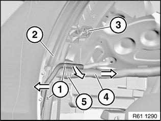
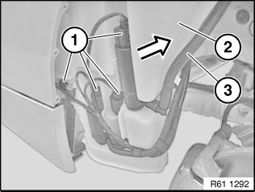
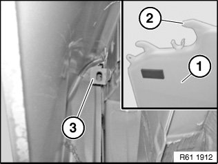
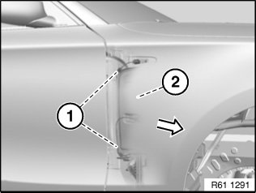

Windshield Washer Reservoir: Service and Repair
61 71 061 Replacing Fluid Reservoir For Windscreen Washer System

Necessary preliminary tasks:
- Remove front right auxiliary turn indicator light
- Remove right wheel arch cover
- If necessary, remove right front wheel

Unclip wiring harness fasteners (1) in direction of arrow out of fluid reservoir for windscreen washer unit (2).
Release screw (3).
Note: Catch any escaping washer fluid if necessary.
Unlock filler hose (4) and detach from fitting on fluid reservoir (5).

Pull fluid reservoir for windscreen washer system (2) in direction of arrow out of holder.
Disconnect all plug connections (1).
Disengage hose for washer pump (3) from fluid reservoir for windscreen washer system (2).
- Remove window washer pump
- Remove level switch
- If necessary, remove washer pump for headlight cleaning system
- If necessary, remove washer pump for rear window washer system

Installation:
Make sure lug (2) of water reservoir for windscreen washer unit (1) fits correctly in retaining fixture (3).

Unclip auxiliary direction indicator wiring harness (1) in direction of arrow out of fluid reservoir for windscreen washer unit (2).
Installation:
Make sure auxiliary direction indicator wiring harness (1) is laid correctly.
Remove fluid reservoir for windscreen washer system (2) in direction of arrow.

Installation:
- Replace strainers on washer pumps
- Coat sealing rings of washer pumps with antiseize agent
- Lay hoses of washer pumps without kinks and clip into holders on fluid reservoir
- Fill fluid reservoir